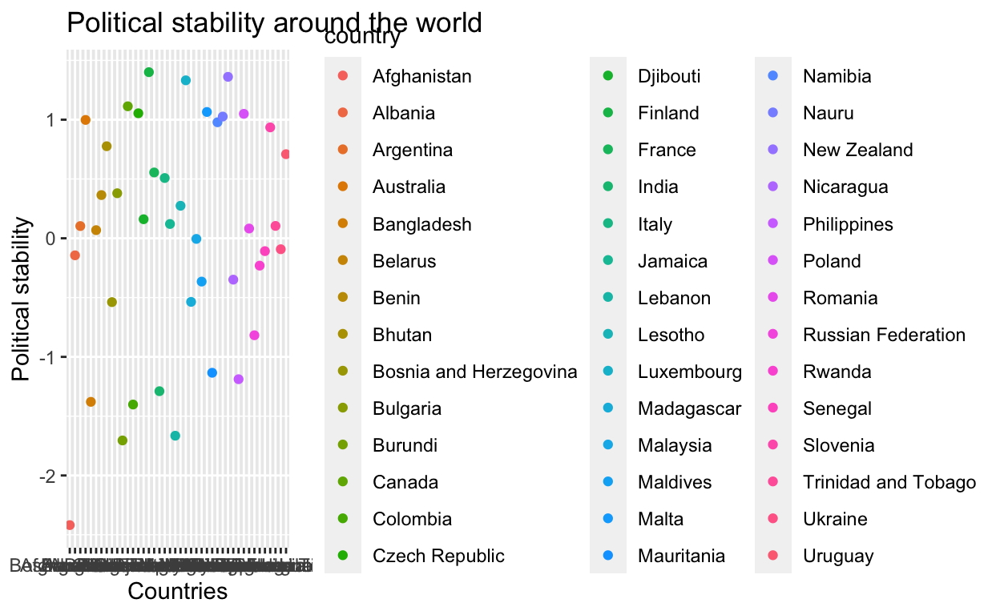
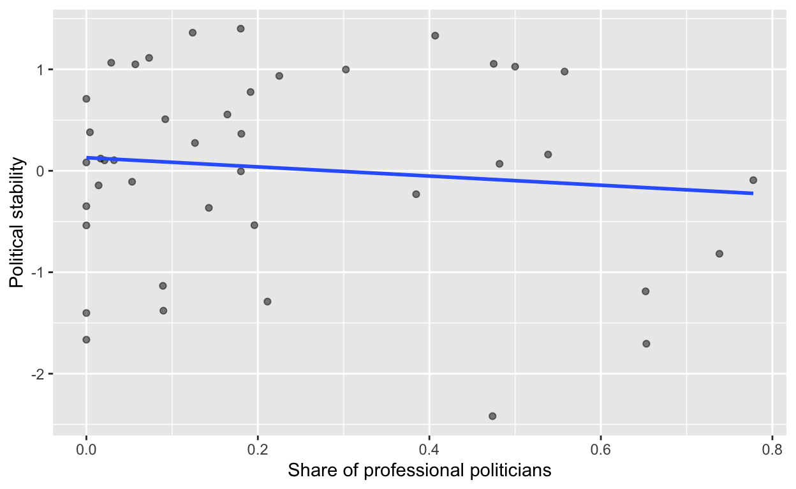

Relationship between career politicians and political stability and government effectiveness
In this project, I analyze the relationship between career politicians and two political outcomes, namely political stability and government effectiveness. Citizens have very varied views on career politicians. Mistrust in professional politicians has led to the rise of populism in many states, as political outsiders are often viewed as being less corrupt and less driven by personal interest in retaining power. The motivation behind this paper stems from an interest in examining whether professional politicians should always be seen in a bad light. I hypothesize that there is a positive relationship between the share of career politicians in a country’s legislature and political stability, since people who have an extensive political background know and respect the “rules of the game”. On the other hand, I hypothesize that legislatures made up of many professional politicians but fewer people with other occupational backgrounds are associated with lower government effectiveness, because politicians with a training in economics, public health, or statistics facilitate the implementation of effective policies in the field in which they specialize.
I investigate the relationship between career politicians and the two outcomes of interest by modelling two separate regressions. To make a more meaningful conclusion about the relationship between these variables, I then control for three confounders: GDP per capita, rule of law, and democratic accountability.
My project is a cross-sectional study of 42 countries at a single point in time, specifically the year 2012. To identify the number of professional politicians in different countries, I used data published in 2012 by the Inter-Parliamentary Union (IPU), which is an international organization of national parliaments. Parliaments used their own approach to categorizing the profession of parliamentarians. Some provided only the last employment before entering parliament; others provided all previous employment up until 2012.
prof_pol <- read_csv("profession_parliament.csv")
prof_pol <- prof_pol |>
drop_na(CODING) |>
rename(country = COUNTRY) |>
mutate(prof = if_else(CODING == 1, 1, 0)) |>
group_by(country) |>
mutate(prop = mean(prof, na.rm = TRUE)) |>
select(country, prop) |>
distinct(country, prop)
prof_pol# A tibble: 47 × 2
# Groups: country [47]
country prop
<chr> <dbl>
1 Afghanistan 0.474
2 Albania 0.0143
3 Argentina 0.0212
4 Australia 0.303
5 Bangladesh 0.0899
6 Belarus 0.482
7 Benin 0.181
8 Bhutan 0.191
9 Bosnia and Herzegovina 0
10 Bulgaria 0.00417
# … with 37 more rowsFor all other variables in my study, I used data for the year 2012 from the Worldwide Governance and Development Indicators published by the World Bank.
Dependent variables:
Government Effectiveness captures perceptions of the quality of public services, the quality of the civil service and the degree of its independence from political pressures, the quality of policy formulation and implementation, and the credibility of the government’s commitment to such policies. The estimate gives the country’s score on the aggregate indicator, in units of a standard normal distribution, i.e. ranging from approximately -2.5 to 2.5.
Political Stability and Absence of Violence/Terrorism measures perceptions of the likelihood of political instability and/or politically-motivated violence, including terrorism. Estimate gives the country’s score on the aggregate indicator, in units of a standard normal distribution, i.e. ranging from approximately -2.5 to 2.5.
eff_stabil <- read_csv("gov_effectiveness_and_pol_stability.csv")
eff_stabil <- eff_stabil |>
rename(country = `Country Name`) |>
mutate(estimate_2012 = as.numeric(eff_stabil$`2012 [YR2012]`)) |>
drop_na(estimate_2012) |>
select(country,`Series Name`, estimate_2012) |>
group_by(`Series Name`) |>
pivot_wider(names_from = `Series Name`,
values_from = estimate_2012) |>
rename(effectiveness = `Government Effectiveness: Estimate`, stability = `Political Stability and Absence of Violence/Terrorism: Estimate`)
eff_stabil# A tibble: 214 × 3
country effectiveness stability
<chr> <dbl> <dbl>
1 Afghanistan -1.38 -2.42
2 Albania -0.268 -0.144
3 Algeria -0.445 -1.33
4 American Samoa 0.481 0.953
5 Andorra 1.52 1.29
6 Angola -0.991 -0.389
7 Anguilla 1.52 1.48
8 Antigua and Barbuda 0.481 0.976
9 Argentina -0.206 0.103
10 Armenia -0.0269 0.155
# … with 204 more rows## joining the two datasets
prof_pol_joined <- prof_pol |>
inner_join(eff_stabil, by = "country")
prof_pol_joined# A tibble: 42 × 4
# Groups: country [42]
country prop effectiveness stability
<chr> <dbl> <dbl> <dbl>
1 Afghanistan 0.474 -1.38 -2.42
2 Albania 0.0143 -0.268 -0.144
3 Argentina 0.0212 -0.206 0.103
4 Australia 0.303 1.61 0.998
5 Bangladesh 0.0899 -0.806 -1.38
6 Belarus 0.482 -0.967 0.0686
7 Benin 0.181 -0.531 0.364
8 Bhutan 0.191 0.554 0.776
9 Bosnia and Herzegovina 0 -0.449 -0.538
10 Bulgaria 0.00417 -0.0315 0.380
# … with 32 more rowsRule of law captures perceptions of the extent to which agents have confidence in and abide by the rules of society, and in particular the quality of contract enforcement, property rights, the police, and the courts, as well as the likelihood of crime and violence. Estimate gives the country’s score on the aggregate indicator, in units of a standard normal distribution, i.e. ranging from approximately -2.5 to 2.5.
Democratic accountability captures perceptions of the extent to which a country’s citizens are able to participate in selecting their government, as well as freedom of expression, freedom of association, and a free media. The estimate gives the country’s score on the aggregate indicator, in units of a standard normal distribution, i.e. ranging from approximately -2.5 to 2.5.
GDP per capita is gross domestic product divided by midyear population for the year 2012 and it is reported in US dollars.
GDP_per_capita <- read_csv("GDP/GDP_per_capita.csv")
GDP_per_capita <- GDP_per_capita |>
rename(country = `Country Name`) |>
mutate(country=gsub("Czechia", "Czech Republic", country))|>
rename(GDP_per_cap = `2012 [YR2012]`) |>
select(country,GDP_per_cap)
## adding GDP per capita to previous data set
prof_pol_confounder <- prof_pol_joined |>
inner_join(GDP_per_capita, by = "country")
prof_pol_confounder# A tibble: 42 × 5
# Groups: country [42]
country prop effectiveness stability GDP_per_cap
<chr> <dbl> <dbl> <dbl> <dbl>
1 Afghanistan 0.474 -1.38 -2.42 639.
2 Albania 0.0143 -0.268 -0.144 4248.
3 Argentina 0.0212 -0.206 0.103 13083.
4 Australia 0.303 1.61 0.998 68028.
5 Bangladesh 0.0899 -0.806 -1.38 883.
6 Belarus 0.482 -0.967 0.0686 6953.
7 Benin 0.181 -0.531 0.364 1145.
8 Bhutan 0.191 0.554 0.776 2539.
9 Bosnia and Herzegovina 0 -0.449 -0.538 4777.
10 Bulgaria 0.00417 -0.0315 0.380 7432.
# … with 32 more rowsgovernance_confounders <- read_csv("Governance Confounders.csv")
governance_confounders <- governance_confounders |>
rename(country = `Country Name`) |>
rename(data_2012 = `2012 [YR2012]`) |>
drop_na(data_2012) |>
select(country,`Series Name`, data_2012) |>
group_by(`Series Name`) |>
pivot_wider(names_from = `Series Name`, values_from = data_2012)|>
rename(rule_of_law = `Rule of Law: Estimate`, democratic_accountability = `Voice and Accountability: Estimate`)
governance_confounders # A tibble: 42 × 3
country democratic_accountability rule_of_law
<chr> <dbl> <dbl>
1 Afghanistan -1.27 -1.65
2 Albania 0.0221 -0.520
3 Argentina 0.295 -0.623
4 Australia 1.50 1.76
5 Bangladesh -0.402 -0.936
6 Belarus -1.57 -0.923
7 Benin 0.124 -0.575
8 Bhutan -0.281 0.261
9 Bosnia and Herzegovina -0.100 -0.197
10 Bulgaria 0.401 -0.115
# … with 32 more rows## final data set
prof_pol_allconfounders <- prof_pol_confounder |>
inner_join(governance_confounders, by = "country")
prof_pol_allconfounders# A tibble: 42 × 7
# Groups: country [42]
country prop effec…¹ stabi…² GDP_p…³ democ…⁴ rule_…⁵
<chr> <dbl> <dbl> <dbl> <dbl> <dbl> <dbl>
1 Afghanistan 0.474 -1.38 -2.42 639. -1.27 -1.65
2 Albania 0.0143 -0.268 -0.144 4248. 0.0221 -0.520
3 Argentina 0.0212 -0.206 0.103 13083. 0.295 -0.623
4 Australia 0.303 1.61 0.998 68028. 1.50 1.76
5 Bangladesh 0.0899 -0.806 -1.38 883. -0.402 -0.936
6 Belarus 0.482 -0.967 0.0686 6953. -1.57 -0.923
7 Benin 0.181 -0.531 0.364 1145. 0.124 -0.575
8 Bhutan 0.191 0.554 0.776 2539. -0.281 0.261
9 Bosnia and Herzego… 0 -0.449 -0.538 4777. -0.100 -0.197
10 Bulgaria 0.00417 -0.0315 0.380 7432. 0.401 -0.115
# … with 32 more rows, and abbreviated variable names ¹effectiveness,
# ²stability, ³GDP_per_cap, ⁴democratic_accountability,
# ⁵rule_of_laweffectiveness_plot <- ggplot(data = prof_pol_allconfounders, mapping = aes(x = country, y = effectiveness)) +
labs(x = "Countries",
y = "Government effectiveness",
title = "Government effectiveness around the world")+
geom_bar(aes(fill = country, color = country), stat = "identity")
effectiveness_plotstability_plot <- ggplot(data = prof_pol_allconfounders, mapping = aes(x = country,y = stability, fill = country, color = country)) +
labs(x = "Countries",
y = "Political stability",
title = "Political stability around the world")+
geom_point()
stability_plot
## scatter plots of the outcomes and the main independent variable
prof_pol_joined |>
ggplot(mapping = aes(x = prop, y = effectiveness)) +
geom_point(alpha = 0.5) +
labs(x = "Share of professional politicians",
y = "Government effectiveness")+
geom_smooth(method = "lm", se = FALSE)prof_pol_joined |>
ggplot(mapping = aes(x = prop, y = stability)) +
geom_point(alpha = 0.5) +
labs(x = "Share of professional politicians",
y = "Political stability")+
geom_smooth(method = "lm", se = FALSE)
## simple linear regression between share of career politicians and the two outcomes of interest
model1 <- lm (effectiveness ~ prop, data = prof_pol_joined)
tidy(model1) |>
knitr::kable(digits = 3)| term | estimate | std.error | statistic | p.value |
|---|---|---|---|---|
| (Intercept) | 0.283 | 0.198 | 1.427 | 0.161 |
| prop | -0.816 | 0.618 | -1.321 | 0.194 |
| term | estimate | std.error | statistic | p.value |
|---|---|---|---|---|
| (Intercept) | 0.129 | 0.208 | 0.621 | 0.538 |
| prop | -0.453 | 0.648 | -0.699 | 0.489 |
## multiple regression
model3 <- lm (effectiveness ~ prop + GDP_per_cap + rule_of_law + democratic_accountability, data = prof_pol_allconfounders)
tidy(model3)# A tibble: 5 × 5
term estimate std.error statistic p.value
<chr> <dbl> <dbl> <dbl> <dbl>
1 (Intercept) 0.0426 0.0900 0.473 6.39e-1
2 prop -0.267 0.246 -1.09 2.84e-1
3 GDP_per_cap 0.00000487 0.00000374 1.30 2.00e-1
4 rule_of_law 0.841 0.136 6.19 3.44e-7
5 democratic_accountability -0.0342 0.133 -0.258 7.98e-1modelsummary::modelsummary(list(model1, model3),
statistic = c("s.e. = {std.error}",
"p = {p.value}"),
gof_map = c("nobs", "r.squared", "adj.r.squared"))| Model 1 | Model 2 | |
|---|---|---|
| (Intercept) | 0.283 | 0.043 |
| s.e. = 0.198 | s.e. = 0.090 | |
| p = 0.161 | p = 0.639 | |
| prop | −0.816 | −0.267 |
| s.e. = 0.618 | s.e. = 0.246 | |
| p = 0.194 | p = 0.284 | |
| GDP_per_cap | 0.000005 | |
| s.e. = 0.000004 | ||
| p = 0.200 | ||
| rule_of_law | 0.841 | |
| s.e. = 0.136 | ||
| p = <0.001 | ||
| democratic_accountability | −0.034 | |
| s.e. = 0.133 | ||
| p = 0.798 | ||
| Num.Obs. | 42 | 42 |
| R2 | 0.042 | 0.884 |
| R2 Adj. | 0.018 | 0.871 |
model4 <- lm(stability ~ prop + GDP_per_cap + rule_of_law + democratic_accountability, data = prof_pol_allconfounders)
tidy(model4)# A tibble: 5 × 5
term estimate std.error statistic p.value
<chr> <dbl> <dbl> <dbl> <dbl>
1 (Intercept) 0.0315 0.157 0.201 0.842
2 prop 0.245 0.428 0.573 0.570
3 GDP_per_cap -0.00000780 0.00000650 -1.20 0.238
4 rule_of_law 0.922 0.236 3.90 0.000388
5 democratic_accountability 0.0497 0.231 0.215 0.831 modelsummary::modelsummary(list(model2, model4),
statistic = c("s.e. = {std.error}",
"p = {p.value}"),
gof_map = c("nobs", "r.squared", "adj.r.squared"))| Model 1 | Model 2 | |
|---|---|---|
| (Intercept) | 0.129 | 0.032 |
| s.e. = 0.208 | s.e. = 0.157 | |
| p = 0.538 | p = 0.842 | |
| prop | −0.453 | 0.245 |
| s.e. = 0.648 | s.e. = 0.428 | |
| p = 0.489 | p = 0.570 | |
| GDP_per_cap | −0.000008 | |
| s.e. = 0.000007 | ||
| p = 0.238 | ||
| rule_of_law | 0.922 | |
| s.e. = 0.236 | ||
| p = <0.001 | ||
| democratic_accountability | 0.050 | |
| s.e. = 0.231 | ||
| p = 0.831 | ||
| Num.Obs. | 42 | 42 |
| R2 | 0.012 | 0.670 |
| R2 Adj. | −0.013 | 0.634 |
Analysis of first multiple regression:
The estimated coefficient on prop is around -0.267, which means that for a one-unit increase in the share of professional politicians, there is an associated decrease in government effectiveness by 26.7 percentage points, holding GDP per capita, rule of law, and democratic accountability constant. This matches my hypothesis that having more professional politicians is associated with a reduction in government effectiveness. However, this regression coefficient is not statistically significant, as it has a p-value of 0.284. Consequently, when alpha is 0.05, I cannot reject the null hypothesis that the share of professional politicians has no effect on government effectiveness, and fail to establish a causal relationship between share of professional politicians and government effectiveness.
The simple linear regression with government effectiveness as the outcome and just the share of professional politicians as the predictor shows a stronger effect between these variables. The regression coefficient on prop is -0.816. Thus, for every one point increase in share of career politicians, government effectiveness decreases on average by 81.6 percentage points. However, this relationship is also statistically insignificant, as the prop variable has a p-value of 0.194, which is higher than the threshold that I chose in advance (0.05).
Analysis of second multiple regression:
The estimated coefficient on stability is around 0.245, which means that a one-unit increase in the share of professional politicians is associated with an increase in political stability by 24.5 percentage points, after controlling for GDP per capita, rule of law, and democratic accountability. This supports my hypothesis that having more professional politicians is beneficial for political stability. However, this regression coefficient is not statistically significant, as it has a p-value of 0.57. Therefore, at an alpha level of 0.05, the null hypothesis that the share of professional politicians has no effect on political stability is still valid, which means that any observed differences in political stability could be due to random chance. I cannot make any causal claims regarding the effect of career politicians on political stability because of the statistical insignificance of the coefficient on stability as well as other factors that I will describe in the conclusion.
The simple linear regression with political stability as the outcome and just the share of professional politicians as the predictor show the opposite relationship between these variables. The regression coefficient on prop is −0.453. This means that for every one point increase in share of career politicians, it could be predicted that political stability decreases 45.3 percentage points. The results of the basic regression contradict my initial hypothesis that professional politicians are likely to maintain political stability. However, after including several confounders, the multiple regression supports my hypothesis. At the same time, neither regression coefficients are statistically significant. The prop variable of the basic regression has a p-value of 0.489, which is higher than the alpha level that I set in my study.
From a causal point of view, multiple regressions are more robust than basic regressions because they allow us to establish a ceteris paribus relationship between independent and dependent variables. The multiple regressions that I obtained showed me the relationship between the share of professional politicians, on the one hand, and government effectiveness and political stability, on the other, while holding other variables constant. I chose GDP per capita, rule of law, and democratic accountability as confounders, because they influence the independent variable and dependent variables in my study. Therefore, to increase the certainty that the associated changes in government effectiveness and political stability are really due to a change in share of professional politicians, I included them in my multiple regression. The results of the multiple regressions matched both of my hypotheses that there is a positive relationship between share of professional politicians and political stability, but a negative relationship between the former and government effectiveness.
However, my multiple regressions fall short of establishing any causal effects. Apart from the fact that the coefficients that I obtained are not statistically significant, I was unable to study variation in the two dependent variables over time. The data set on share of professional politicians that I found only had data for the year 2012. Thus, this study could be significantly improved if there were data on the number of career politicians in national legislatures over a longer of period of time. A longitudinal research design that tracks the impact of professional politicians on political stability and government effectiveness over time would be more reliable in identifying causal effects. To further improve this study, future researchers could include more confounders, such as region and pervasiveness of corruption, among others. Only observational studies are suitable for this type of research question, as experimental studies are arguably unfeasible. Ideally, we would be able to have a controlled experiment with perfect randomization, where we can show that there are no omitted variables impacting our causal relationship. However, assigning countries into a treatment group with a high share of professional politicians and other countries into a control group with low share of professional politicians would not only pose conceptual difficulties (such as exactly how many professional politicians should be in the treatment and control group) but also practical barriers, as researchers cannot do this kind of large-scale experiments on national governments. Moreover, in my analysis I assumed that there is a linear relationship between the share of professional politicians and the two outcomes of interest. Since it might be the case that having some professional politicians produces a certain effect on government effectiveness and political stability but then may have reverse effects as the number of professional politicians exceeds a certain range, future studies could opt for non-linear regression models.